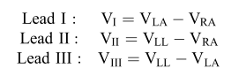
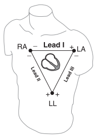
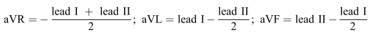
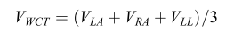
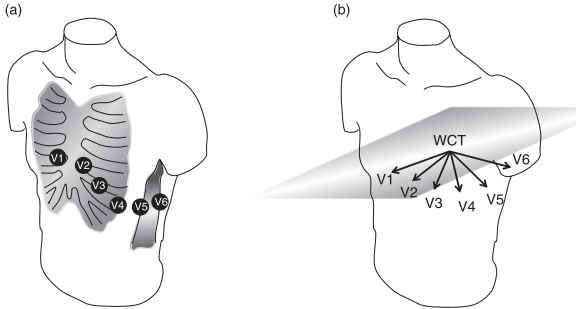
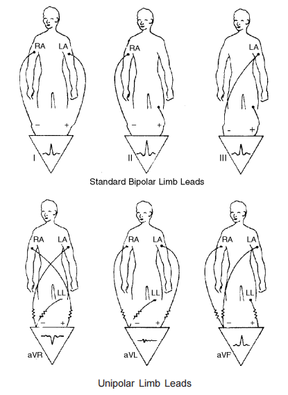
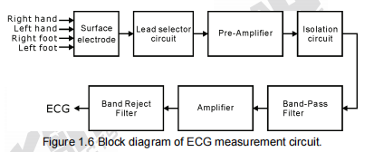
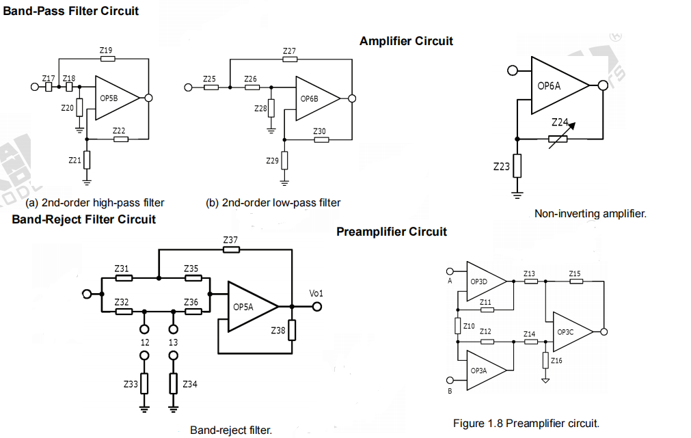

I. Introduction to ECG
ECG is electrocardiography written in short.
It is a technology that allow you to track electrical activity in human heart.
By having 12 electrodes placing on skin surface in specific parts of body, we can transduce ionic currents and convert it into ECG signal.
ECG is crucial for treating, diagnosing cardiac defections.
Check it out II. Electrical activity in heart
The electrical activity in heart makes our heart contract and relax so that we can pump blood.
Ions Na+, Ca2+, K+ in cardiac muscle cells create repolarization, depolarization by moving through cell membrane.These processes control muscle activity in our heart
Cells depolarizing and repolarizing produce transmembrane voltage and system measures it indirectly, also, these events produce ionic currents within the body which can be transduced by electrodes. III. Electrodes and 12 leads
Three active electrodes placed on extremities are left arm (LA), right arm (RA), left leg (LL), ground electrode right leg (RL)
From that, we achieve 3 leads these are biopolar leads:


Principle of Biomedical Instrumentation-Andrew G.Webb
We calculate unipolar augmented leads

Six precordial leads (unipolar) V1 to V6 are calculated with respect to WTC( Wilson's central terminal)


Principle of Biomedical Instrumentation-Andrew G.Webb

A text book of medical instruments-S.Ananthi, 2005
IV. ECG system design
Different companies, corp. have different ECG systems design, It is impossible to cover them all. so we will just consider one. And this I will provide you knowledge on one channel ECG.

EXPERIMENT 1 ELECTROCARDIOGRAPHY pg.edu.pl
Frequency ranges from 0.1 to 100 Hz, maximum amplitude is 1mV in normal signal and we will amplify it. A silver/silver chloride electrode is used.
EXPERIMENT 1 ELECTROCARDIOGRAPHY pg.edu.pl

EXPERIMENT 1 ELECTROCARDIOGRAPHY pg.edu.pl
Lead selector help ECG choose lead, input buffers transfer signal without any loss, input buffers have impedance matches the impedance between skin-electrode .
Preamplifier is an instrumentation amplifier which reject common mode noise.
Low-pass filter rejects EMG noise. High-pass filter rejects DC offset voltage. Band-reject filter removes 50/60Hz noise. Opto isolator will be used in isolation circuit which protect patient from current leakage.
Also, not mentioned in above system, there are driven right leg circuit that removes common mode signal, lead-off circuit which is designed to alert if impeadance between skin and electrode is higher than allowance. VI. ECG summary
Let see a video on youtube( ECG video)
please view home
please view electroencephalography V. Reference
[1] "A text book of medical instruments" - S.Ananthi, 2005
[2] EXPERIMENT 1 ELECTROCARDIOGRAPHY pg.edu.pl
[3] Principle of Biomedical Instrumentation-Andrew G.Webb